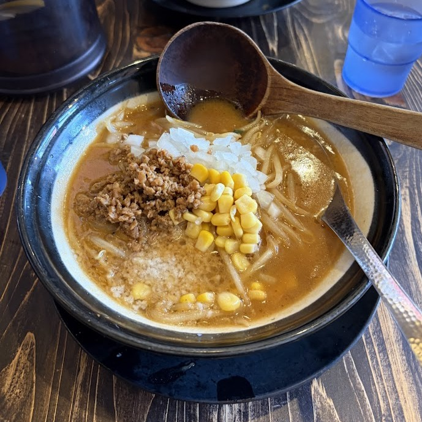

| 商品名 | 価格 |
|---|---|
| 味噌ラーメン | 890円 |
| 赤ネギ味噌ラーメン | 990円 |
| 特味噌ラーメン | 1190円 |
| 味噌坦々麺 | 990円 |
| 味噌バターコーンラーメン | 1,040円 |
| まぜそば | 920円 |
イチオシ味噌ラーメン↓

サイドメニューも含めて25~30種類のメニューがあります。
| 店名 | 味噌ラーメン専門店 日月堂 与野本町店 |
|---|---|
| 営業時間 |
11:00 〜 15:00 17:00 〜 23:00 |
| 定休日 | なし（年中無休 ※元日などを除く） |
| 住所 | 〒338-0003 埼玉県さいたま市中央区本町東1-3-18 |
| アクセス | JR埼京線「与野本町駅」西口から徒歩3分 |